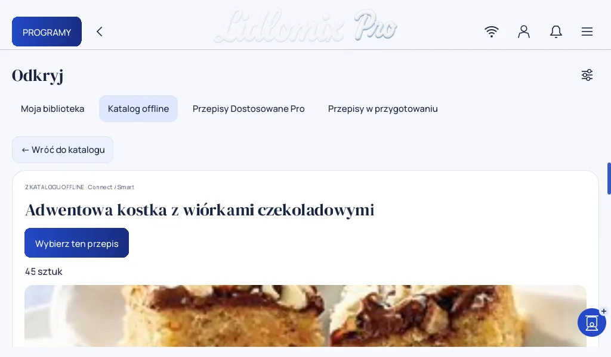

03 / Essais d'équipement ·
Du fichier à la cuisson
La deuxième étape de la recette de tranches de chocolat de l'Avent est de peser les amandes. Je voulais qu'un écran montre combien il y avait à ajouter et combien il y avait déjà dans le bol.
Recette ouverte

De la carte, je peux passer par la recette. Dans cet exemple, la deuxième étape est de peser les amandes.
Pondération au cours d'une recette

Lors d’une pesée, Lidlomix Pro affiche la mesure du capteur du Connect à côté de la quantité prévue dans la recette. Sur mon appareil, la mesure évolue par pas de 5 g. Le bouton Tare remet l’affichage à zéro avant l’ajout de l’ingrédient suivant. J’ai aussi testé la vitesse, la température, le compte à rebours et le fonctionnement par intervalles. Les étapes compatibles peuvent désormais commander le robot.
Bouton flottant

J'ai trois raccourcis à portée de main: Poids, Turbo et lavage.
Pourquoi la recette a eu son propre format
Je pouvais lire un fichier Word, mais je devais encore entrer le temps, la vitesse et la direction de la lame à la main. Un fichier JSON stocke ces paramètres pour chaque étape. Après avoir importé et choisi la recette Adapt, l'application peut montrer une étape de pétrissage avec son temps déjà défini, par exemple.
J'ai également essayé d'ouvrir ChatGPT dans le navigateur Connect. Le navigateur a fonctionné lentement sur ce matériel, donc j'ai déplacé la préparation de la recette au téléphone. Je sauvegarde un fichier de l'assistant et l'application mobile l'envoie au robot via le réseau local Wi-Fi. C'est le flux de travail que je teste maintenant dans l'utilisation quotidienne.